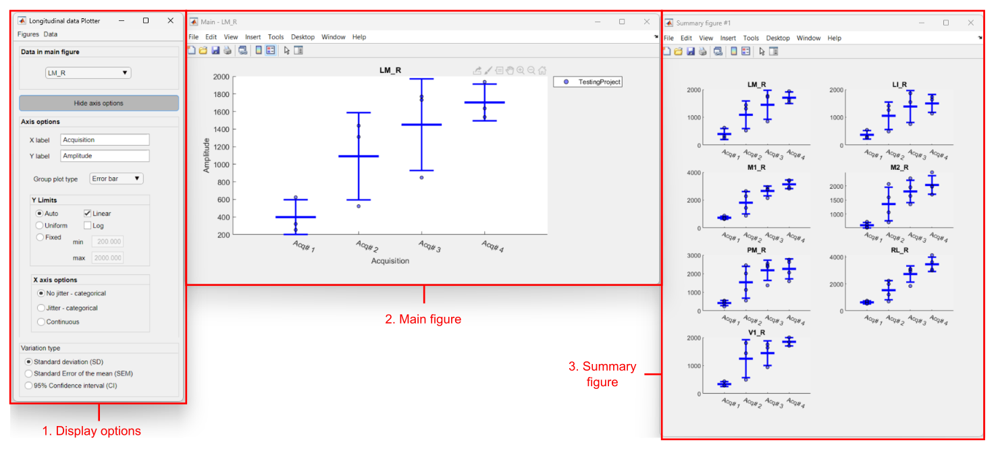

This tool is part of the Analysis tab from the umIToolbox app. This tool allows one to visualize longitudinal data that can be segregated into one or more experimental groups.
Note
This documentation does not cover the steps that precede the usage of the Line/Box tool.
For more information on how to create the files used in the Analysis tab of umIToolbox as well as on how to separate the data into groups, check the tutorials on how to extract, group and visualize grouped data.
To use the tool, first, select the recordings, files and ROIs to be displayed. Then, launch the tool by clicking on Line/Box plots button in the Apps & tools panel.
Note
The current version of the tool displays the data as line plots. Box plots will be available on a later release of the toolbox!
This tool accepts only one numerical value per ROI.
Once the tool is launched, the data is plotted as the ROI values as a function of time. By default, the data is shown as the ROI values grouped by acquisition over time. Individual data points are shown as a scatter plot while the average (+- standard deviation) is shown as a line plot.
The interface comprises of three or more figures: the display options, main window and one or more summary windows:

Main components of Line/Box tool interface. (1) Display options: controls the axis parameters and changes the ROI shown in the main window. (2) Main window: figure showing the current ROI data. (3) Summary window(s): One or more figures containing up to six subplots with all the ROIs loaded.
Note
Each plot will be saved in a separate file with a name composed of a string and the name of the ROI appended with an underscore (FILENAME_ROINAME).
Figure containing the plot of the ROI selected in the Display options figure (1).
Figure containing up to six plots of all ROIs loaded. An extra figure will be created for each subset of six ROIs.